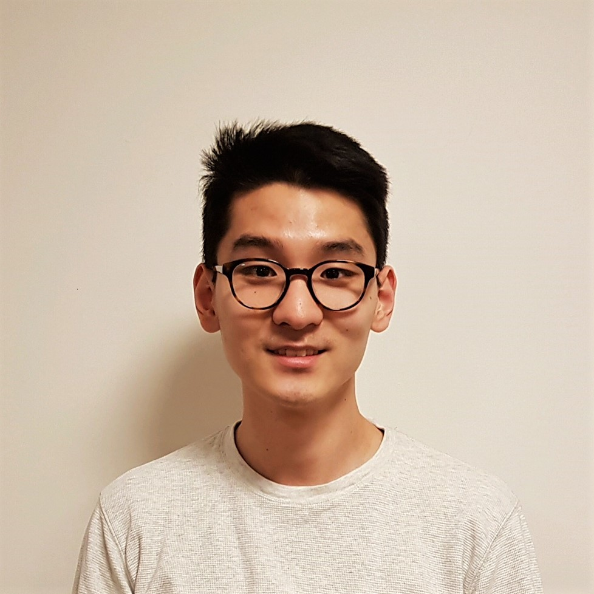

Busy Monitor informs students on how busy key campus locations are by tracking their live network traffic. The application was created by Kevin Bae, Michelle Feng, Jennifer Leung, and Jasper Park, as part of a COMP 20 group project.
Gill Eun Kang
Majoring in Economics and Philosophy From Seoul, South Korea Loves Ganjang Gaejang Class of 2018
President

Kun Woo (Kevin) Lee
Majoring in Biopsychology and Philosophy From Irvine, CA Loves samggyupsal Class of 2019
Vice President
Dennis Kim
Majoring in Cognitive Brain Science From Clarksville, MD Loves Jjajangmyun Class of 2018
Senior Advisor
Justin Jo
Majoring in Computer Engineering From San Rafael, CA Loves soondubu Class of 2018